| 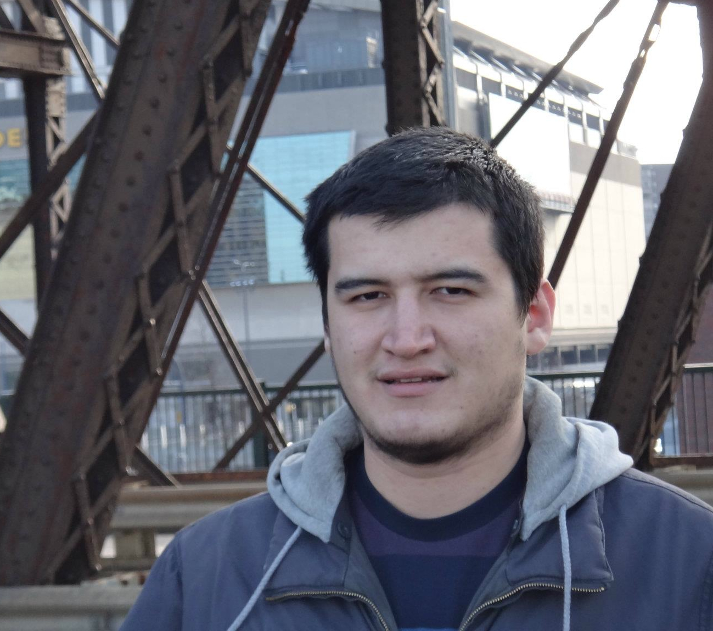 |
Ahmet
Erdem Sariyuce received his PhD from
the Department of Computer Science and Engineering at The Ohio State
University in 2015. He received his B.S. in Computer Engineering in Middle
East Technical University, Turkey, 2010. His research interests
include graph mining, streaming graph algorithms and combinatorial scientific computing.
|
| 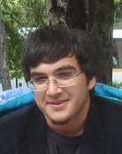 | Mehmet
Deveci received his PhD from the Department of Computer Science &
Engineering at The Ohio State University in 2015. His research
interests are bioinformatics and high performance
computing. He received his B.S. in Computer Engineering from
Middle East Technical University, Turkey in 2010. |
| 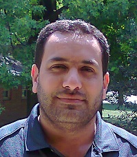 | Anas Abu-Doleh is a PhD Student in the Electrical and Computer Engineering Department at The Ohio State University. His research
interests include bioinformatics and high performance
computing. He received his B.S. in Computer Engineering from Yarmouk University, Jordan in 2004 and M.S. in Computer Engineering from Jordan University of Science and Technology, Jordan in 2009. |
| 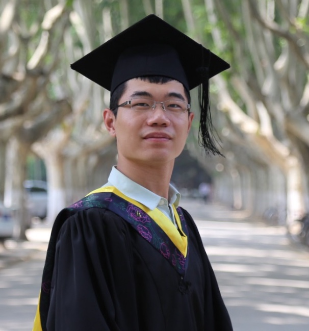 |
Xusheng Wang is a PhD Student in the Department of Electrical and Computer Engineering at The Ohio State University.
He received his B.S. degree in School of Electrical and Information Engineering from Xi'an Jiao Tong University, China in 2015. |
| 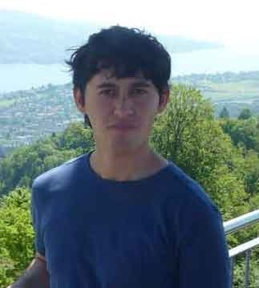 |
Izzet Senturk received his PhD from the Department of Computer Science
in Southern Illinois University. He received BS and MEng in Computer Science from Ege University,
Turkey in 2006 and Cornell University in 2008, respectively. His research interests are bioinformatics
and high performance computing. |
| 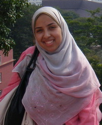 |
Ayat Hatem completed her PhD at the Department
of Electrical and Computer Engineering in 2014. She received her M.S.
in Software Engineering from Nile University, Egypt, in 2009 and
B.S. in Computer Engineering from Cairo University, Egypt, 2007.
Her research interests include computational biology and artifical intelligence. |
| 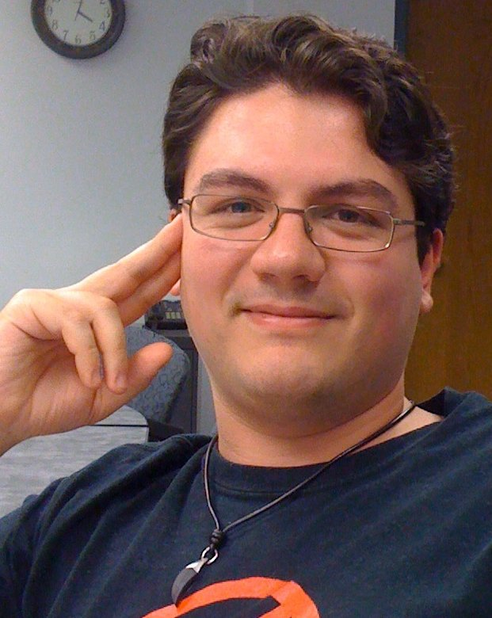 |
Erik
Saule has been a post-doctoral researcher in the
Department of Biomedical Informatics at The Ohio State
University from 2009 to 2013. His research interests include multi objective
optimization, approximation algorithm, scheduling and parallel
computing. He received his PhD and Master in Computer Science,
respectively in 2008 and 2005, from Institut National
Polytechnique de Grenoble, France and his License in Computer
Science in 2003 from University of Versailles,
France. |
|
Onur Kucuktunc
received his PhD from the Computer Science and Engineering Department
at The Ohio State University in 2013, with Dr. Catalyurek as his advisor.
He received his B.S. and M.S. degrees in Computer Engineering from Bilkent University, Turkey
in 2007 and 2009, respectively. During his masters, he worked on content-based video copy
detection and visual similarity-based tag suggestion. Currently, his research interests
include similarity and diversity search, sentiment analysis, opinion retrieval, and biclustering.
|
|
Doruk
Bozdag has been a post-doctoral researcher in the
Department of Biomedical Informatics at The Ohio State
University. His research interests include parallel graph
algorithms, scheduling algorithms for multiprocessor systems,
data mining and bioinformatics. He received his Ph.D. in
Electrical and Computer Engineering from The Ohio State
University in 2008 and B.S. in Electrical and Electronic
Engineering and B.S. in Physics from Bogazici University,
Turkey, in 2002.
|
| 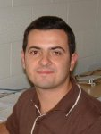 |
Olcay
Sertel obtained his PhD at the Department of
Electrical and Computer Engineering in 2010. He was working as
a Research Associate at the Department of Biomedical
Informatics under the supervision of Prof. Umit Catalyurek and
Prof. Metin Gurcan. He was working jointly
under Clinical Image
Analysis Lab. on histological image analysis and under HPC
Lab. on computational issues in processing very large
histology imagery. He received his BSc. and MSc. degrees from
Yildiz Technical University, and Yeditepe University,
Istanbul, Turkey in 2004 and 2006, respectively, both in
Computer Engineering. |
| 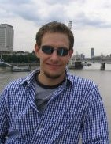 |
Tim Hartley received his PhD from the Department
of Electrical and Computer Engineering in 2011, with Dr. Catalyurek as his
advisor. He received his B.S. in ECE from New Mexico State University,
and his M.S. in ECE from The Ohio State University. His research
interests include component-based programming frameworks and disruptive
architectures such as GPUs and the Cell. |
| 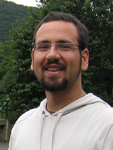 |
Erdeniz Ozgun Bas received his Master
degree from the Department of Computer Science and
Engineering at The Ohio State University in 2011. His
research interests include artificial intelligence, neural networks
and high performance computing. He received his B.S. in Computer
Engineering in Ege University, Turkey. |
| 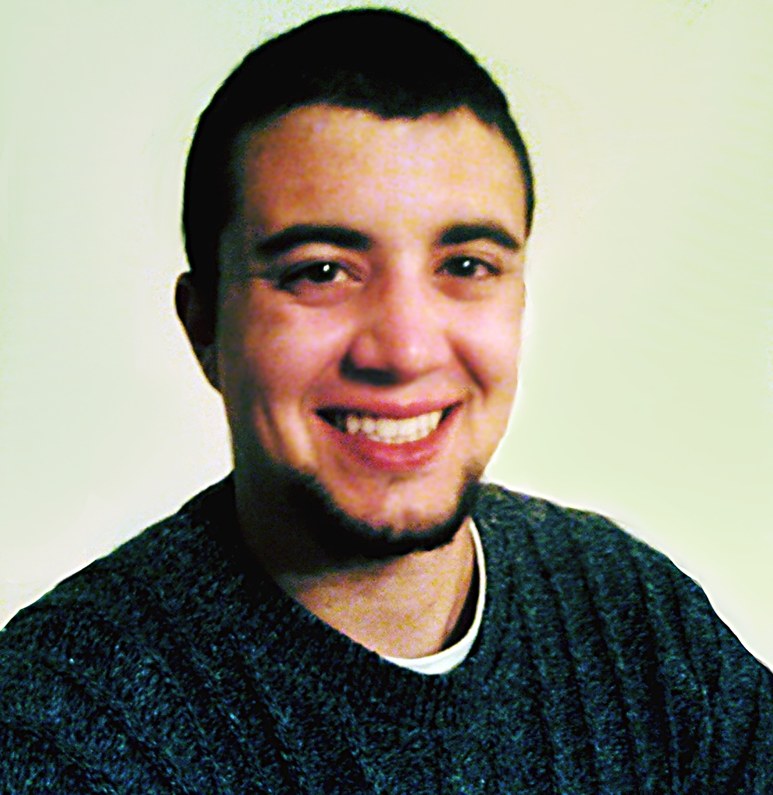 |
Kemal Eren received his Master degree from the Department of
Computer Science and Engineering in 2012. His research interests are
machine learning, data mining, bioinformatics, and scientific computing. He
received his B.S. in biology and minors in computer science
and mathematics from the University of Michigan in 2009. |
|
Zheng Zhou is a visiting student in the
Department of Biomedical Informatics at The Ohio State
University, with Dr. Catalyurek as his advisor. He received
his B.S and M.S in Computer Science from Wuhan
University. Now, he is also a PhD student in Computer Science
at Wuhan University. His research intersets are parallel
algorithms, high performance computing and computer
architecture. |
| 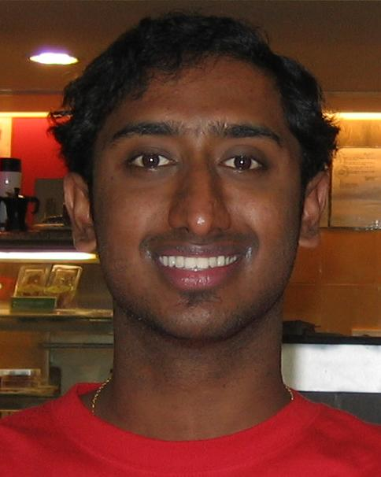 |
Ashwin Shiv Kumar obtained his Masters degree in the Department of
Computer Science and Engineering in 2010. He received his B.E. in Information Science and Engineering,
in 2008, from R V College of Engineering, affiliated to Visweswaraya Technological University, India.
His research interests include data mining and bioinformatics. |
Arun C Sundaram: 2009 Sep - 2009 Dec
Lakshmi Prabha Kumarasamy: 2009 Sep - 2009 Dec